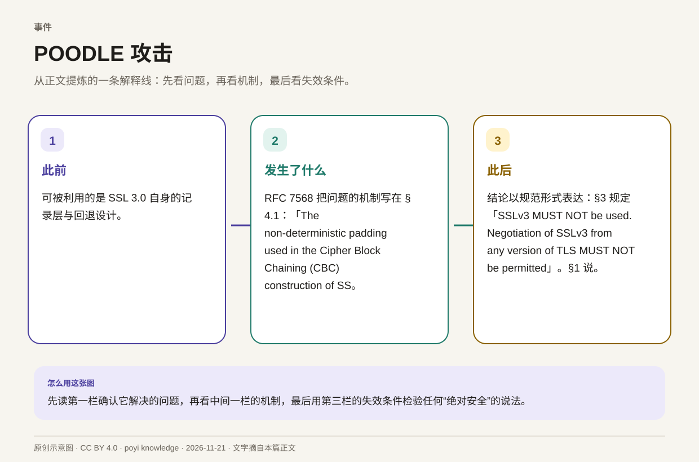

原理与机制
事件：POODLE 攻击（POODLE Attack）。RFC 7568 把问题的机制写在 §4.1：「The non-deterministic padding used in the Cipher Block Chaining (CBC) construction of SSLv3 trivially permits the recovery of plaintext [POODLE]」，摘要据此要求「that SSLv3 not be used」。同一节还说明 SSLv3 的 CBC 模式使用「a flawed MAC-then-encrypt construction that has subsequently been replaced in TLS versions [RFC7366]」，并且「SSLv3 cannot be updated to correct this flaw in the same way」。

为什么重要
可被利用的是 SSL 3.0 自身的记录层与回退设计。RFC 6101 §5.2.3.2（CBC Block Cipher）描述 CBC 记录的填充，其中 padding_length 字段定义为「The length of the padding must be less than the cipher's block length and may be zero」，并说明「With CBC, the initialization vector (IV) for the first record is provided by the handshake protocol.The IV for subsequent records is the last ciphertext block from the previous record」（原文以 Note: 起句）；附录 E 则规定支持旧版的客户端必须发送旧版握手消息：「Version 3.0 clients that support version 2.0 servers must send version 2.0 client hello messages [SSL-2]」（原文如此，句首大写）。
应用与实例
结论以规范形式表达：§3 规定「SSLv3 MUST NOT be used.Negotiation of SSLv3 from any version of TLS MUST NOT be permitted」。§1 说明为什么禁用仍然必要：「Since it was released in 1996, the SSLv3 protocol [RFC6101] has been subject to a long series of attacks」（句首大写原文保留），而且尽管 TLS 1.0（RFC 2246）在 1999 年、TLS 1.1（2002）与 TLS 1.2（2006）相继替代，「availability of these replacement versions has not been universal」。
边界与攻击面
该文档把 SSLv3 的其余防线也一并否定：§4.1 结论是「This leaves SSLv3 with no suitable record protection mechanism」；§4.2 补充「The SSLv3 key exchange is vulnerable to man-in-the-middle attacks when renegotiation [RFC5746] or session resumption [TRIPLE-HS] are used」；§4.3 则指出「all SSLv3 primitives rely on SHA-1 [RFC3174] and MD5 [RFC1321]」。该条目只采用这些成文结论，文档自己的参考文献对这次披露给出了一处归属——[POODLE] 条目是 Moeller 2014 年 10 月那篇标题即双关的披露文章；该条目不再补缩写全称，也不引入部署比例。
历史与背景
RFC 7568 由 Barnes、Thomson、Pironti 与 Langley 撰写，2015 年 6 月发布为 Standards Track 并更新 RFC 5246；§7.2 的 [POODLE] 参考文献条目列为 Moeller 的「This POODLE bites: exploiting the SSL 3.0 fallback」，标注 October 2014 并给出网络链接。RFC 6101 则是把 SSL 3.0 作为历史文档收录：其前言写明本文描述「what is known as the last published version of the SSL 3.0 protocol, that is, the November 18, 1996, version of the protocol」。
逐步示例与核验
事件时间线模型
背景 → 过程 → 结果 → 争议。背景写此前技术/制度；过程写可核参与者与时间；结果写后续标准、机器、课程或政策；争议写二手叙述与一手材料的差距。
参考出处
- Wikipedia search entry for POODLE 攻击. https://zh.wikipedia.org/w/index.php?search=POODLE%20%E6%94%BB%E5%87%BB
- A Brief History of Cryptology and Cryptographic Algorithms (Dooley, Springer 2013). https://link.springer.com/book/10.1007/978-3-319-01628-3